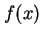
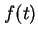
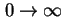
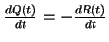
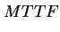
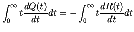
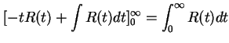
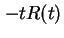
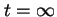
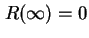

Next: เวลาเฉลี่ยในการซ่อมแซม (MTTR)
Up: การประเมินค่าความน่าเชื่อถือเชิงปริมาณ
Previous: อัตราการเสียหาย และฟังก์ชั่นความน่าเชื่อถือ
Contents
Index
นอกจากอัตราความเสียหายของระบบ ค่าเชิงปริมาณที่สำคัญอีกตัวหนึ่งคือ ค่าเวลาเฉลี่ยก่อนการเสียหาย: Mean Time to Failure (MTTF) ที่สามารถใช้สะท้อนถึงคุณภาพของระบบได้ ค่า MTTF คือค่าที่คาดว่าระบบจะสามารถทำงานได้ก่อนการเสียหายครั้งแรกจะเกิดขึ้น ตัวอย่างเช่น ถ้ามีระบบที่เหมือนกันทุกประการ  ชุด เริ่มทำงานพร้อมกันที่เวลา
ชุด เริ่มทำงานพร้อมกันที่เวลา  และเราทำการวัดเวลาที่อุปกรณ์ทำงานก่อนเกิดการล้มเหลวในการทำงานครั้งแรก, ค่าเฉลี่ยของเวลาดังกล่าวคือค่า MTTF ถ้าระบบ
และเราทำการวัดเวลาที่อุปกรณ์ทำงานก่อนเกิดการล้มเหลวในการทำงานครั้งแรก, ค่าเฉลี่ยของเวลาดังกล่าวคือค่า MTTF ถ้าระบบ  สามารถทำงานเป็นเวลา
สามารถทำงานเป็นเวลา  ก่อนประสบกับความเสียหายครั้งแรก ค่า MTTF จะเท่ากับ
ก่อนประสบกับความเสียหายครั้งแรก ค่า MTTF จะเท่ากับ
ค่า MTTF สามารถหาค่าได้จากค่าคาดหวังของค่าเวลาก่อนเกิดความเสียหายครั้งแรก. จากทฤษฎีความน่าจะเป็น ค่าคาดหวังมีค่าเท่ากับ
เมื่อ  คือฟังก์ชั่นความหนาแน่นของความน่าจะเป็น ในการวิเคราะห์ความน่าเชื่อถือ เราสามารถเขียนค่า MTTF ได้เท่ากับ
เมื่อค่า  คือฟังก์ชั่นความหนาแน่นของการเสียหาย และการตั้งช่วงการอินทิกัล อยู่ในช่วง  เนื่องจากเรานิยามการทำงานของระบบจากเวลา  ค่าฟังก์ชั่นความหนาแน่นของการเสียหายมีค่าเท่ากับ
ค่าฟังก์ชั่นความหนาแน่นของการเสียหายมีค่าเท่ากับ
ดังนั้นสามารถ เขียนสมการ MTTF ได้เป็น
จาก
 เราสามารถแสดงว่า
|  |
 |
 |
|
| |
|
 |
(10.24) |
ในเทอมของ  จะหายไปที่เวลา และที่เวลา  เนื่องจากค่า  จากการใส่ค่า Limit ดังกล่าวเราจะได้ค่า MTTF เป็นฟังก์ชั่นของความน่าเชื่อถือคือ
ซึ่งสามารถใช้งานได้กับฟังก์ชั่นความน่าเชื่อถือใดๆ มีค่า
ถ้าค่าฟังก์ชั่นความน่าเชื่อถือเป็นไปตามกฎการเสียหายแบบ Exponential
ค่า MTTF สามารถคำนวณได้จาก
นั้นคือค่า MTTF ของระบบมีค่าเท่ากับส่วนกลับของอัตราความเสียหาย ถ้าเวลา  มีค่าเท่ากับค่า MTTF ค่าความน่าเชื่อถือมีค่าเท่ากับ
มีค่าเท่ากับค่า MTTF ค่าความน่าเชื่อถือมีค่าเท่ากับ
หมายความว่าระบบจะมีความน่าจะเป็นเท่ากับ 0.3678 ที่จะสามารถทำงานได้อย่างต่อเนื่อง โดยไม่ล้มเหลว ก่อนเวลาเท่ากับค่า MTTF ถ้าระบบทำงานอย่างถูกต้องเมื่อเริ่มใช้งาน หรืออีกนัยหนึ่งระบบที่เป็นไปตามกฎการเสียหายแบบ Exponential จะมีความน่าจะเป็นเท่ากับ 0.6322 ที่จะเสียหายที่เวลาเท่ากับค่า MTTF ถ้าระบบทำงานอย่างถูกต้องเมื่อเริ่มใช้งาน
Next: เวลาเฉลี่ยในการซ่อมแซม (MTTR)
Up: การประเมินค่าความน่าเชื่อถือเชิงปริมาณ
Previous: อัตราการเสียหาย และฟังก์ชั่นความน่าเชื่อถือ
Contents
Index
Vara Varavithya
2002-03-09